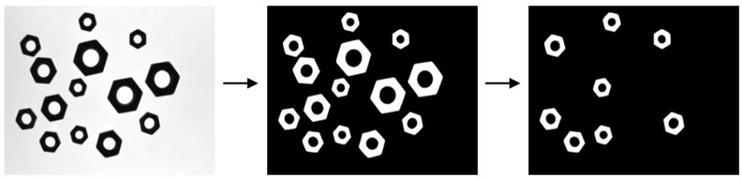

|
类型 |
特征 |
|
描述 |
选择区域列表中指定特征满足要求的区域，输出选择的区域列表，输出列表为普通列表 |
|
语法 |
ZV_ReSelect(relist,selected,feature,min,max,isInvert)
参数： relist：ZVOBJECT类型，区域列表，支持专用列表和普通列表，专用列表筛选输出也是普通列表 selected：ZVOBJECT类型，输出参数，选择的区域列表 feature：区域特征类型，参考排序，可取值-1，则按照顺序取序号在范围内的区域 min：特征值的下限 max：特征值的上限 isInvert：是否反向选择，为1则保留不在范围内的区域 |
|
适用控制器 |
支持ZV功能或者5系列以上的控制器 |
|
例子 |
 ZVOBJECT img,mask,re ZV_ImgRead(img,"region2.png",0) '读取图片 ZV_ReGenFullImage(img,mask) '生成全图区域掩膜 ZV_ReThresh(img,mask,re,0,150) '区域二值化
ZVOBJECT re_connent_list ZV_ReConnect(re,re_connent_list) '计算区域的连通区域
'筛选操作 ZVOBJECT re_select LOCAL connect_size,filter_size connect_size = ZV_ObjCount(re_connent_list) '连通区域个数 ZV_ReSelect(re_connent_list,re_select,0,1500,3000,0) '保留面积在1500-3000的区域 filter_size = ZV_ObjCount(re_select) '筛选后连通区域个数 ?"筛选前后连通区域个数分别为：",connect_size,filter_size |
|
相关指令 |